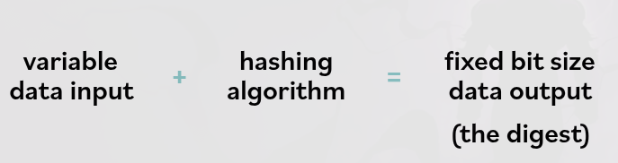
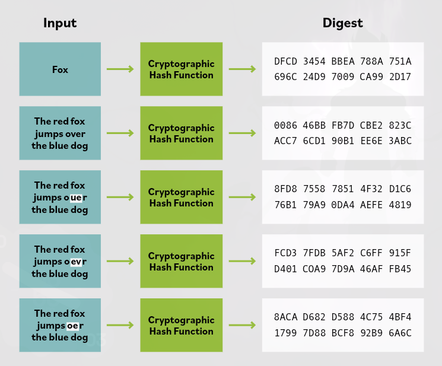

24. Hashing
Hashing takes an input of almost any size and returns a fixed-length result called the hash value
A hash function is the algorithm used to perform this transformation.
With cryptographically strong hash algorithms, hashing is a common method of ensuring message integrity (making sure the message has not been changed).
Hashes are used in computing and security to create a message digest by applying a hash function to the plaintext body of a message.

Properties of a Cryptographic Hash Function
A cryptographic hash function must be:
- Useful: easy to compute the hash value for any given message
- Nonreversible: computationally infeasible to reverse the hash process or derive the original plaintext from the hash value
- Content integrity assurance: computationally infeasible to modify a message and still produce the original hash value
- Unique: computationally infeasible to find two different sensible messages with the same hash value
- Deterministic: the same input always generates the same hash when using the same hashing algorithm
Uses of Hash Functions
Cryptographic hash functions are used in information security for:
- digital signatures
- message authentication codes
- other forms of authentication
They can also be used for fingerprinting (uniquely identifying files), finding duplicate data, and as checksums to detect accidental data corruption.

Basic Hashing Process
A simple hashing function works like this:
variable data input + hashing algorithm = fixed bit size data output (the digest)
The originator hashes the message to create a digest and sends the digest along with the message.
The receiver hashes the received message using the same algorithm and compares that digest with the sender’s digest.
- If the digests are the same, the received message is the same as the sent message.
- A simple hash function alone does not protect against a malicious attacker who could change both the message and the digest in transit.

Key Points
Even a very small change in the input message creates a completely different hash value. The digest size does not vary with the size of the message, so a person cannot tell the size of the message from the digest.